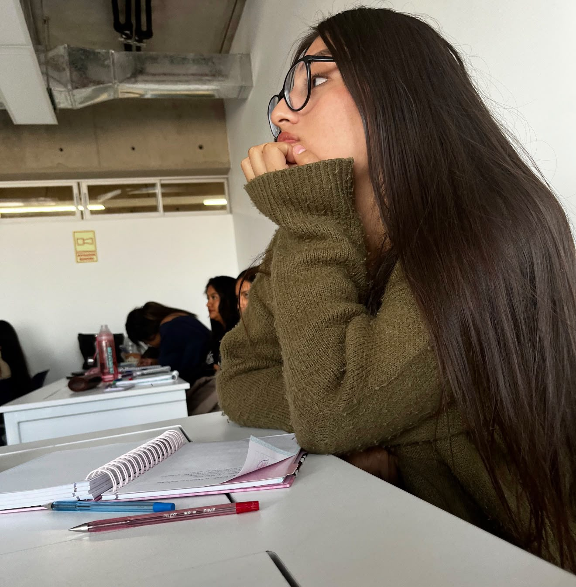
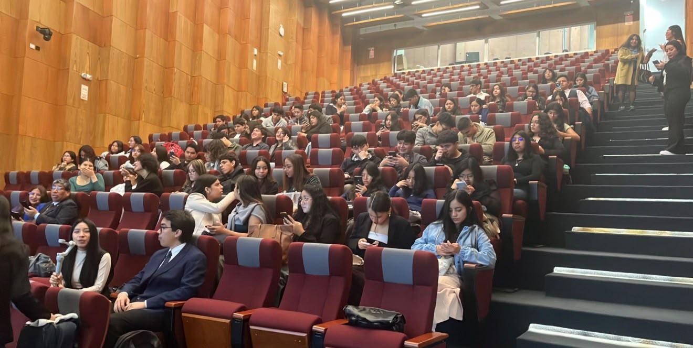

Bienvenida
¡Hola! Soy Yanina Luz Ramos Estrada, estudiante de octavo ciclo de la carrera de Derecho, apasionada por el aprendizaje continuo, la investigación jurídica y la aplicación práctica del conocimiento legal.
Mi formación académica, complementada con mi experiencia laboral en una notaría, me ha permitido desarrollar competencias que fortalecen mi crecimiento profesional y mi compromiso con la justicia.
Sobre mí
Me considero una persona responsable, organizada y perseverante, con facilidad para adaptarme a nuevos retos y trabajar en equipo.
Creo firmemente que el Derecho es una herramienta fundamental para garantizar el orden, la protección de los derechos y la solución pacífica de los conflictos, por lo que busco prepararme constantemente para ejercer esta profesión con ética y compromiso.
Actualmente me encuentro desempeñando funciones en una notaría, donde participo en diversas actividades relacionadas con la gestión documental y la atención de procedimientos notariales, fortaleciendo mis conocimientos tanto teóricos como prácticos.

Perfil profesional
Durante mi formación universitaria y experiencia laboral he adquirido habilidades en la elaboración y revisión de documentos jurídicos, análisis normativo y manejo de herramientas digitales utilizadas en el sistema de justicia.
Tengo conocimientos en el manejo de la Consulta de Expedientes Judiciales, CEJ, y del Sistema de Notificaciones Electrónicas, SINOE, plataformas indispensables para el seguimiento de procesos judiciales y la gestión eficiente de expedientes.
Asimismo, cuento con experiencia en la redacción de escritos jurídicos, elaboración de solicitudes, recursos y otros documentos legales que requieren precisión técnica y adecuada fundamentación.
Mi experiencia en el ámbito notarial me ha permitido comprender la importancia de la seguridad jurídica, la correcta formalización de los actos y la atención responsable a los usuarios.
Habilidades
Intereses personales y profesionales
Mi interés se centra en continuar especializándome en áreas como el Derecho Civil, Derecho Notarial y Registral, Derecho Constitucional y nuevas tecnologías aplicadas al ámbito jurídico, conocidas como Legal Tech.
Considero que la innovación tecnológica representa una oportunidad para modernizar la prestación de servicios legales y hacer más eficiente el acceso a la justicia.
En el ámbito personal, me interesa seguir aprendiendo, desarrollar nuevas habilidades y participar en experiencias que fortalezcan mi crecimiento académico, profesional y humano.

Objetivos
Mi principal objetivo es convertirme en una profesional íntegra, competente y comprometida con los valores de la ética y la responsabilidad.
Aspiro a seguir fortaleciendo mis conocimientos mediante la práctica y la capacitación constante, contribuyendo con soluciones jurídicas eficaces que generen confianza y seguridad para las personas e instituciones.
Asimismo, busco desarrollar habilidades que me permitan integrar el Derecho con la tecnología, adaptándome a los cambios que experimenta la profesión y aportando valor en un entorno cada vez más digitalizado.
Filosofía personal
“Cada experiencia representa una oportunidad para aprender, crecer y servir con responsabilidad. La preparación constante y la integridad son la base para ejercer el Derecho con excelencia y contribuir positivamente a la sociedad.”